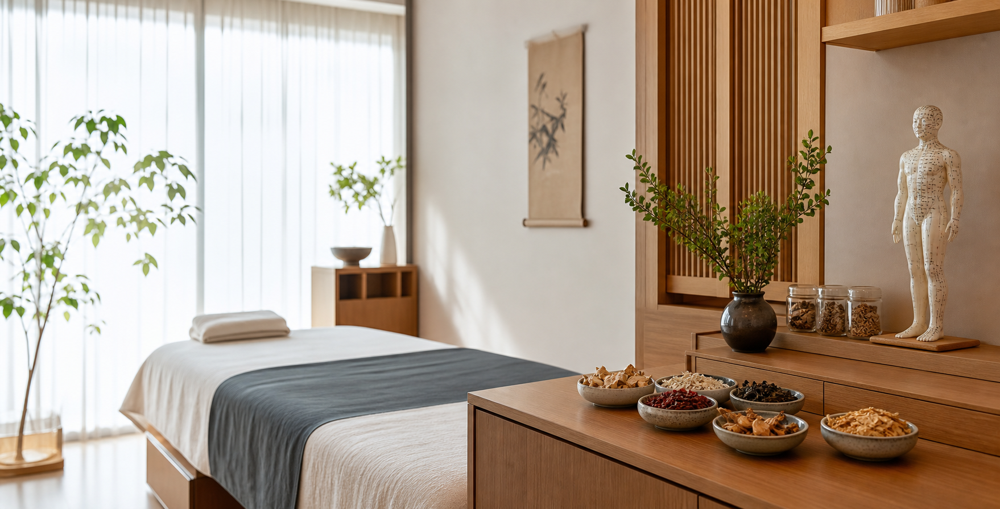
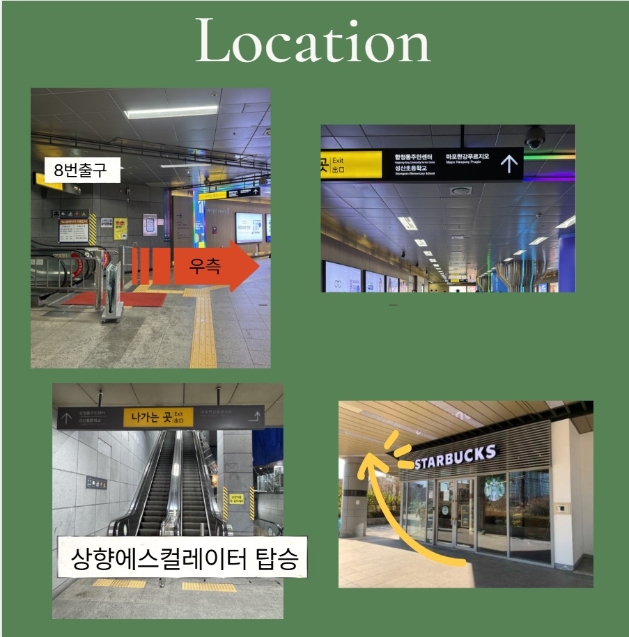
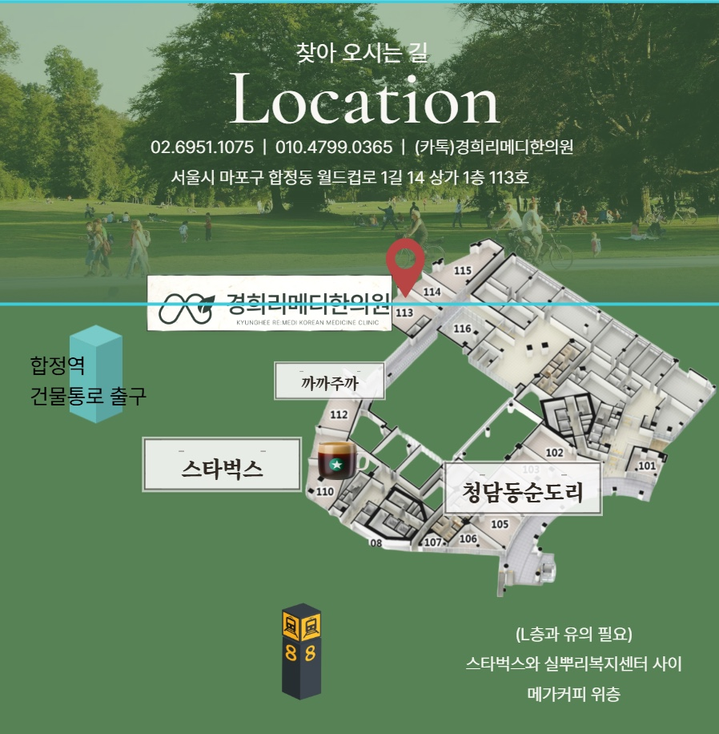
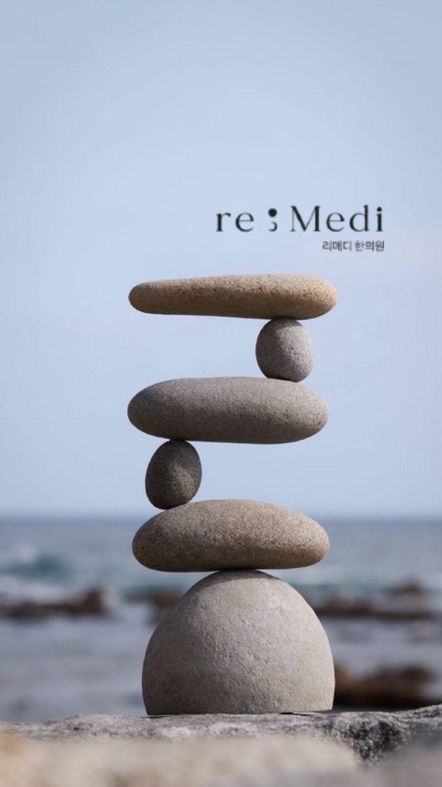
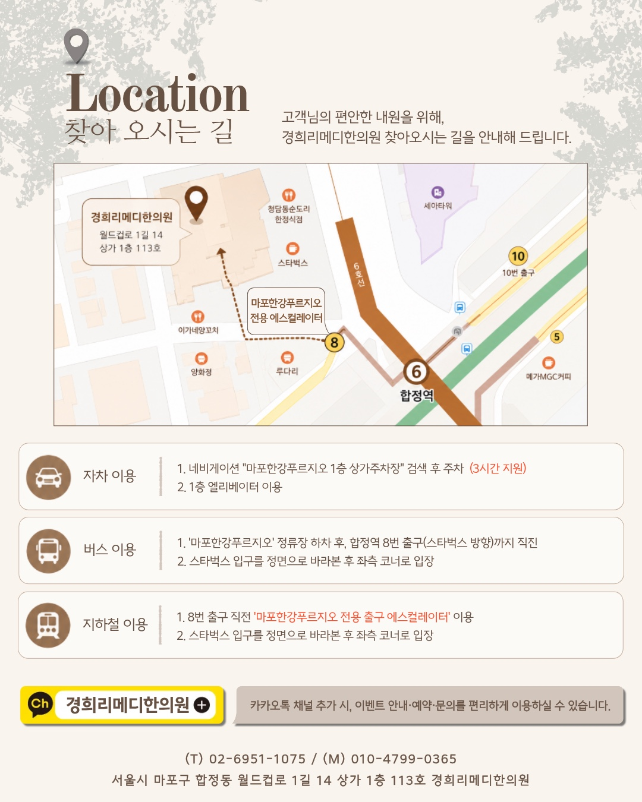

re:medi scenes



안면비대칭 · 골격교정 · 라인관리 · 다이어트 · 교통사고후유증
상담 예약About re:medi
리메디소개
리메디는 얼굴과 몸의 균형을 함께 보는 한의원입니다. 의료진, 오시는 길, 예약, 야간진료, 원장상담, 원내 직접 탕전 정보를 첫 방문자가 바로 이해할 수 있게 정리했습니다.
Medical Director
대표원장 홍은빈
상담에서 현재 고민과 진료 방향을 직접 확인하고, 안면비대칭과 골격교정, 통증, 다이어트 진료를 개인 상태에 맞춰 설명합니다.
의료진
대표원장 홍은빈이 상담에서 현재 고민과 진료 방향을 직접 확인합니다.
예약·야간진료
월·화·수·목·금 야간진료를 운영하며, 예약 중심으로 대기와 동선을 줄입니다.
원장상담
안면비대칭, 골격교정, 통증, 다이어트 상담을 개인 상태에 맞춰 설명합니다.
원내 직접 탕전
진료 본 한의사가 원내에서 직접 탕전하여 더욱 믿을 수 있습니다.
Facial Asymmetry Clinic
안면비대칭 클리닉
얼굴의 좌우 차이를 눈높이, 코끝, 입꼬리, 턱선만으로 보지 않고 턱관절, 목·어깨 긴장, 자세 습관과 함께 확인합니다.
Face Balance Index
사진에서 보이는 차이와 움직임에서 드러나는 차이를 함께 봅니다.
눈, 코, 입, 턱의 기준선을 먼저 확인합니다.
입을 벌리고 닫을 때의 경로와 긴장을 살핍니다.
씹는 방향, 수면 자세, 스마트폰 자세를 함께 점검합니다.
Skeleton & Posture
골격교정 집중치료와 바른자세 클리닉
#거북목 #편평등 #고관절틀어짐처럼 반복되는 자세 문제를 얼굴선, 통증, 체형 변화와 연결해 봅니다.
거북목
목과 턱 주변 긴장이 얼굴선과 어깨 통증에 미치는 영향을 확인합니다.
편평등
등의 움직임과 흉곽 긴장을 살펴 호흡과 자세 균형을 함께 봅니다.
고관절 틀어짐
골반과 고관절의 좌우 차이를 보행, 허리 긴장, 체형 변화와 연결합니다.
Simple Diet
심플 다이어트
부분비만시술, 바디리프팅, 비대면진료 상담까지 목표 부위와 생활 패턴에 맞춰 단순하고 지속 가능한 방향을 제안합니다.
부분비만시술
팔뚝, 허벅지, 뱃살처럼 신경 쓰이는 부위를 중심으로 상담합니다.
바디리프팅
체중만이 아니라 라인과 탄력 변화를 함께 고려합니다.
비대면진료
가능 범위와 기준을 확인한 뒤 개인 상태에 맞춰 안내합니다.
리프팅·라인관리
얼굴과 바디 라인을 자연스럽게 정리하는 방향으로 상담합니다.
Bride Balance
예비신부클리닉
촬영, 본식, 드레스 피팅처럼 일정이 정해진 순간을 앞두고 얼굴선, 붓기, 팔뚝·허벅지·뱃살 라인을 함께 관리합니다.
- 01일정 확인
촬영일과 본식일을 기준으로 상담 우선순위를 정합니다.
- 02얼굴 균형
안면비대칭, 붓기, 턱선 고민을 먼저 확인합니다.
- 03바디 라인
드레스 라인에 보이는 팔뚝, 허벅지, 복부 고민을 상담합니다.
- 04컨디션 유지
수면, 소화, 스트레스 리듬까지 함께 조정합니다.
Pain & Traffic Accident
교통사고후유증 클리닉
급만성통증, 자동차사고 후유증, 목·허리·어깨 긴장과 불편감을 현재 상태와 사고 경과에 맞춰 살핍니다.
자동차사고 후유증
사고 이후 남는 목, 허리, 어깨 불편감을 확인합니다.
급만성통증
반복되는 통증의 위치, 기간, 악화 요인을 함께 정리합니다.
회복 루틴
진료와 생활 관리가 이어질 수 있도록 내원 계획을 안내합니다.
In-house Decoction
진료 본 한의사가 원내에서 직접 탕전합니다
상담과 처방, 탕전 과정을 한 공간에서 연결해 환자별 상태를 더 세심하게 반영합니다.
Review
치료후기
실제 환자 동의가 확인된 후기만 게시하는 영역입니다. 현재는 진료 과목별 후기 구성을 준비 중입니다.
좌우 얼굴선, 턱관절, 자세 변화 중심으로 정리 예정
팔뚝, 허벅지, 뱃살, 바디리프팅 중심으로 정리 예정
사고 후 불편감과 급만성통증 중심으로 정리 예정
Reservation & Location
오시는길 및 예약
서울 마포구 월드컵로1길 14, 마포한강푸르지오 1차아파트 1층에서 상담합니다.
